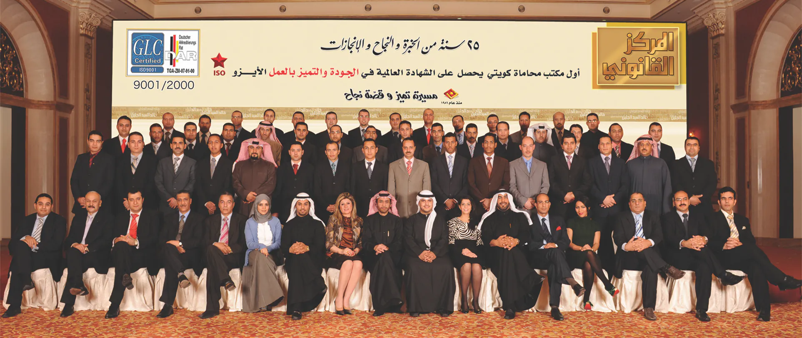

عن المركز
أسس المحامي خالد العبدالجليل المركز القانوني عام 1986، بفكرة مؤسسة قانونية تخدم جميع أفرع القانون داخل الكويت وخارجها، بنفس العناية للفرد وللشركة الكبيرة.
اليوم يحمل المكتب اسم عمر محمد العمر وشركاه، ويعمل من أربعة أدوار في شارع أحمد الجابر بالشرق: محامون ومستشارون وباحثون قانونيون وإداريون وقسم ترجمة، تحت سقف واحد.

حجم الفريق
يعني ذلك خبرة مكتب كبير في كل ملف. ومن خلال تحالفات مع مكاتب محاماة مستقلة حول العالم، نوفر لك محامياً محلياً أينما احتجت.
لماذا بدأنا
رؤيتنا
كانت الفكرة الأهم عند تأسيس المركز القانوني في منتصف الثمانينات إنشاء مؤسسة قانونية تتجاوز الأطر التقليدية في ممارستها اليومية للعمل القانوني، وتتخطى الحواجز المعروفة فيما تقدمه لعملائها.
مهمتنا
ألا يكون المركز مجرد رقم جديد يضاف إلى مكاتب المحاماة في السوق، بل صرحاً يخدم جميع أفرع القانون ويعمل على الصعيدين المحلي والدولي بنفس الجودة والكفاءة.
هيكلنا التنظيمي
كل مجالات العملالإدارة المحلية
كل التقاضي داخل الكويت. لكل عميل محامٍ مؤهل وذو خبرة، يسانده الباحثون القانونيون في كل خطوة أمام المحاكم.
إدارة تحصيل الديون
تحصيل الديون والمتأخرات والأسهم والأرباح والمطالبات والتعويضات والتأمين، بأكثر من اثني عشر موظفاً بإشراف مدير أول.
التنفيذ والتحصيل
فريق التنفيذ المتخصص بأكثر من 50 موظفاً: الضبط والإحضار، منع السفر، حجز الرواتب والسيارات، والحجز على الأموال.
الإدارة الدولية
للعملاء الدوليين داخل الكويت وخارجها: العقود والاتفاقيات، تأسيس الشركات، والرأي في القوانين واللوائح الكويتية.
قسم الترجمة
مترجمونا الخاصون، فتنتقل العقود والمذكرات والمستندات بين العربية والإنجليزية دون أن تخرج من المكتب.
فريقنا

الشركاء
- Mariam Hamad Saleh Al-Dakhil
- Nadia Khalid Al-Khalidi
المحامون
- عمر محمد علي العمر
- Fahd Nuri Al-Salama
- Nasser Al-Khurainej
- Fahad Al-Buraikan
المستشارون القانونيون
- Mamdouh Ibrahim Ahmed Osman
- Salah Mohamed Ramadan